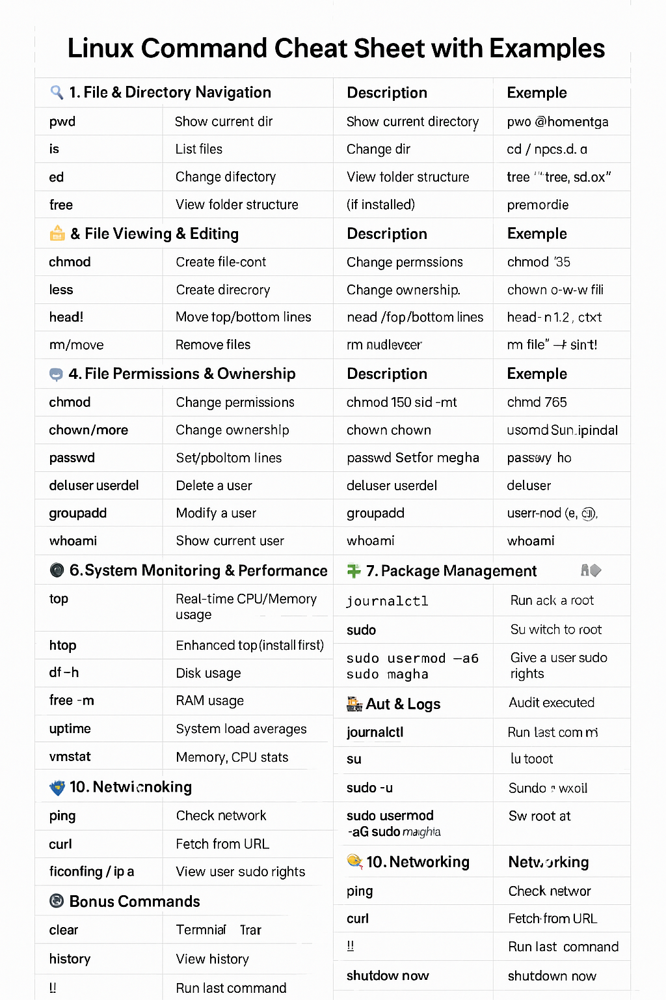

Linux Commands Cheat Sheet
A quick reference for essential Linux commands, explanations, and real-world examples.
1. File & Directory Navigation
| Command | Description | Example |
|---|
pwd | Show current directory | pwd → /home/meghana |
ls | List files | ls -l, ls -a |
cd | Change directory | cd /etc, cd .., cd ~ |
tree | View folder structure (if installed) | tree /var/www |
2. File & Directory Management
| Command | Description | Example |
|---|
touch | Create empty file | touch notes.txt |
mkdir | Create directory | mkdir projects |
cp | Copy files or folders | cp a.txt b.txt, cp -r dir1 dir2 |
mv | Move or rename | mv file1.txt folder/, mv old.txt new.txt |
rm | Remove files | rm file.txt, rm -r folder/ |
find | Find files | find . -name "*.sh" |
3. File Viewing & Editing
| Command | Description | Example |
|---|
cat | View file content | cat file.txt |
less / more | Scroll through file | less bigfile.log |
head / tail | View top/bottom lines | head -n 5 a.txt, tail -f log.txt |
nano / vi | Text editors | nano hello.py, vi config.ini |
4. File Permissions & Ownership
| Command | Description | Example |
|---|
chmod | Change permissions | chmod 755 script.sh, chmod o-w file.txt |
chown | Change ownership | chown root file.txt, chown user:group file |
ls -l | View permissions | ls -l |
stat | View file info | stat file.txt |
5. User & Group Management
| Command | Description | Example |
|---|
adduser | Add user (interactive) | adduser megha |
useradd | Add user (manual) | useradd -m -s /bin/bash megha |
passwd | Set/change password | passwd megha |
deluser / userdel | Delete user | userdel -r megha |
groupadd | Create group | groupadd devs |
usermod | Modify user (e.g., add to group) | usermod -aG sudo megha |
whoami | Show current user | whoami |
id | Show UID, GID, groups | id megha |
6. System Monitoring & Performance
| Command | Description | Example |
|---|
top | Real-time CPU/Memory usage | top |
htop | Enhanced top (install first) | htop |
df -h | Disk usage | df -h |
free -m | RAM usage | free -m |
uptime | System load averages | uptime |
vmstat | Memory, CPU stats | vmstat 1 |
7. Package Management
For Debian/Ubuntu:
apt update # Update package index
apt install htop # Install a package
apt remove htop # Remove a package
apt search nginx # Search package
For Alpine (Play With Docker):
apk update
apk add htop shadow
8. Sudo & Root Access
| Command | Description | Example |
|---|
sudo | Run as root | sudo apt update |
su | Switch to root | su - |
sudo usermod -aG sudo megha | Give user sudo rights | — |
9. Audit & Logs
| Command | Description | Example |
|---|
journalctl | System logs (systemd) | journalctl -xe |
tail -f | Monitor log file live | tail -f /var/log/syslog |
ausearch -m execve | Audit executed commands | ausearch -m execve --start today |
10. Networking
| Command | Description | Example |
|---|
ping | Check network | ping google.com |
curl | Fetch from URL | curl https://example.com |
ifconfig / ip a | View IP address | ip a |
netstat -tuln | View listening ports | netstat -tuln |
Bonus Commands
| Task | Command |
|---|
| Clear terminal | clear |
| View history | history |
| Run last command | !! |
| Shutdown | shutdown now |
| Reboot | reboot |
Advanced Linux Server Administration Manual (Command Cheatsheet)
This expanded reference covers advanced system administration topics for experienced Linux server admins.
1. File & Directory Operations
| Task | Command | Example |
|---|
| Show current directory | pwd | pwd |
| List files (long + hidden) | ls -lah | ls -lah /var/log |
| Change directory | cd | cd /etc/nginx |
| Make directory | mkdir -p | mkdir -p /opt/app/logs |
| Copy files/directories | cp, cp -r | cp -r src/ dst/ |
| Move/rename | mv | mv file.log oldfile.log |
| Remove files/folders | rm, rm -rf | rm -rf /tmp/testdir |
| Find files | find | find / -name "*.conf" |
| Calculate file size | du -sh | du -sh logs/ |
| Show file info | stat | stat /etc/passwd |
| Display large files | find . -type f -exec du -Sh {} + | sort -rh | head -n 10 | — |
2. File Viewing & Text Processing
| Task | Command | Example |
|---|
| View file content | cat, less, more | less /var/log/syslog |
| Head/tail of file | head, tail | tail -n 100 logfile.log |
| Monitor file live | tail -f | tail -f /var/log/nginx/access.log |
| Search inside files | grep, egrep | grep "ERROR" logfile.log |
| Replace text | sed | sed -i 's/http/https/g' conf.txt |
| Field extraction | awk, cut | awk '{print $1}' |
| Count lines/words | wc | wc -l /etc/passwd |
3. Permissions, Ownership & ACL
| Task | Command | Example |
|---|
| Show permissions | ls -l | ls -l /etc/passwd |
| Change permissions | chmod | chmod 755 script.sh |
| Change owner/group | chown | chown root:nginx /etc/nginx/nginx.conf |
| View ACLs | getfacl | getfacl file.txt |
| Set ACLs | setfacl | setfacl -m u:meghna:r file.txt |
4. User & Group Management
| Task | Command | Example |
|---|
| Add user | useradd -m | useradd -m -s /bin/bash megha |
| Set password | passwd | passwd megha |
| Add group | groupadd | groupadd admin |
| Add user to group | usermod -aG | usermod -aG sudo megha |
| View user/group info | id, groups | id megha, groups |
| Delete user | userdel -r | userdel -r tempuser |
5. System Performance & Monitoring
| Task | Command | Example |
|---|
| CPU usage | top, htop | top |
| Memory usage | free -h | free -h |
| Disk usage | df -h | df -h /home |
| Disk IO | iostat | iostat -xm 5 |
| Load averages | uptime | uptime |
| System boot time | who -b | who -b |
| Logged in users | who, w | w |
| Process tree | pstree | pstree -p |
6. Disk Management & Mounting
| Task | Command | Example |
|---|
| List block devices | lsblk | lsblk |
| Mount disk | mount | mount /dev/sdb1 /mnt/data |
| Unmount disk | umount | umount /mnt/data |
| Show mount points | mount, findmnt | findmnt |
| Format disk | mkfs.ext4 | mkfs.ext4 /dev/sdb1 |
| View partition table | fdisk -l, blkid | fdisk -l |
| Resize partition | resize2fs | resize2fs /dev/sdb1 |
7. Package Management
Debian/Ubuntu:
apt update
apt install package-name
apt remove package-name
dpkg -l | grep nginx
RHEL/CentOS:
yum install httpd
dnf remove firewalld
rpm -qa | grep mysql
Alpine:
apk update
apk add bash htop curl
8. Logs & Auditing
| Task | Command | Example |
|---|
| View logs | journalctl | journalctl -u nginx |
| View boot logs | dmesg | dmesg | grep error |
| Monitor log file | tail -f | tail -f /var/log/messages |
| Audit logins | last, lastb | last -a |
| Audit commands | ausearch -m execve --start today | — |
| Audit sudo use | grep 'sudo:' /var/log/auth.log | — |
9. Networking
| Task | Command | Example |
|---|
| Show IP | ip a, hostname -I | ip a |
| Ping host | ping | ping google.com |
| Check open ports | ss -tuln, netstat | ss -tuln |
| DNS resolution | dig, nslookup | dig openai.com |
| Interface stats | ifconfig, ip -s | ip -s link |
| Trace route | traceroute, mtr | traceroute google.com |
10. Sudo & Privileges
| Task | Command | Example |
|---|
| Add sudo access | usermod -aG sudo user | usermod -aG sudo megha |
| Run as root | sudo, su - | sudo apt update |
| Switch to user | su - username | su - megha |
11. Services & Process Management
| Task | Command | Example |
|---|
| Check service | systemctl status | systemctl status ssh |
| Start/stop service | systemctl start/stop | systemctl restart nginx |
| Enable at boot | systemctl enable | systemctl enable apache2 |
| Kill process | kill, pkill | kill -9 PID, pkill -f nginx |
12. Backup & Archiving
| Task | Command | Example |
|---|
| Create tar archive | tar -czf | tar -czf backup.tar.gz /var/www |
| Extract archive | tar -xzf | tar -xzf backup.tar.gz -C /opt |
| Sync dirs | rsync -av | rsync -av /data/ /backup/data/ |
| Create disk image | dd if=/dev/sda of=/mnt/backup.img | — |
13. Crontab & Scheduling
| Task | Command | Example |
|---|
| Edit crontab | crontab -e | crontab -e |
| List cron jobs | crontab -l | crontab -l |
| View system cron | ls /etc/cron* | — |
| Cron example | 0 3 * * * /usr/bin/backup.sh | Run backup daily at 3 AM |
